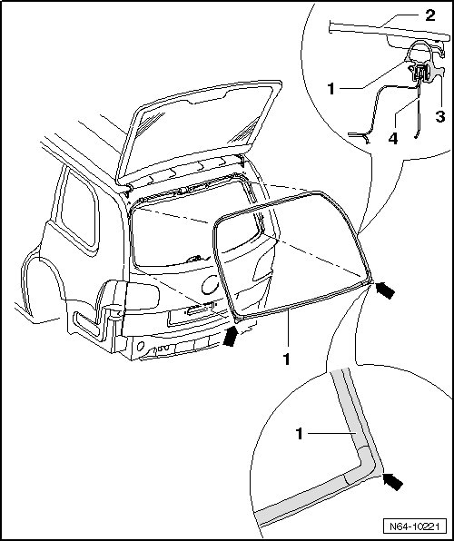

Hinged Window Seal
Hinged Window Seal
• The seal - 1 - for the rear lid hinged window - 2 - - 4 - is a hammer-stroke seal. After removing, it can be re-installed.
• Make sure sealing lip - 3 - is routed correctly on seal - 1 -.
• The lower water drains - arrows - must point outward.

- Align seal - 1 - with water drains - arrows - at lower corners.
- Position seal - 1 - all around and then knock the seal - 1 - on.
- If necessary, guide sealing lip - 3 - out.
- Align corners for water drains - arrows -.